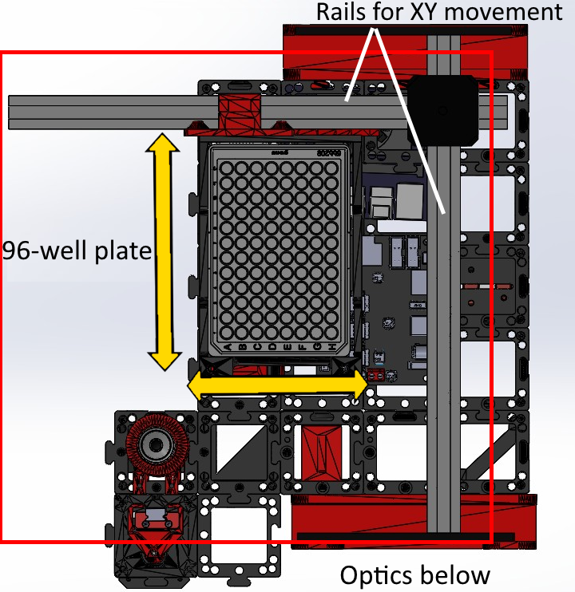
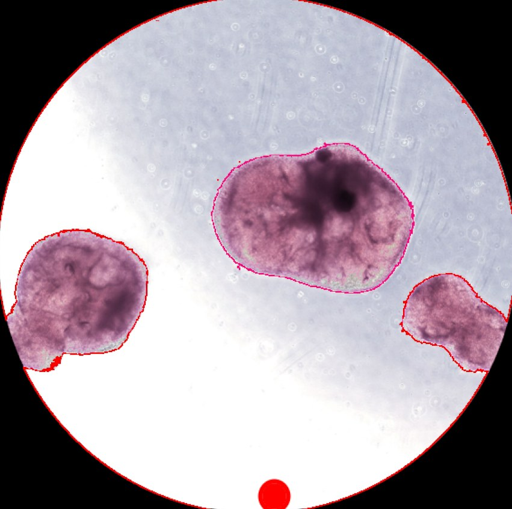
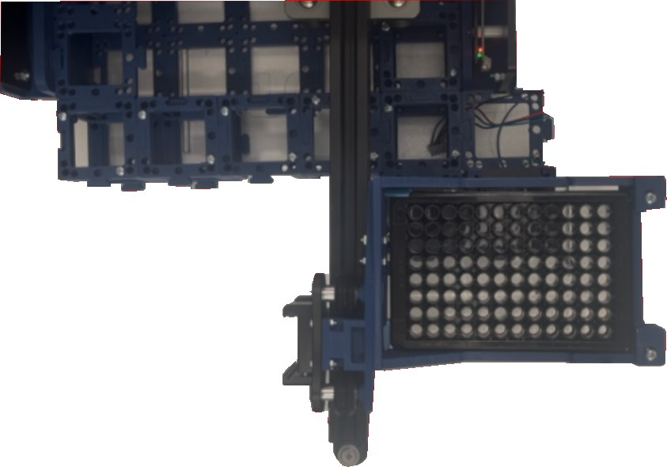
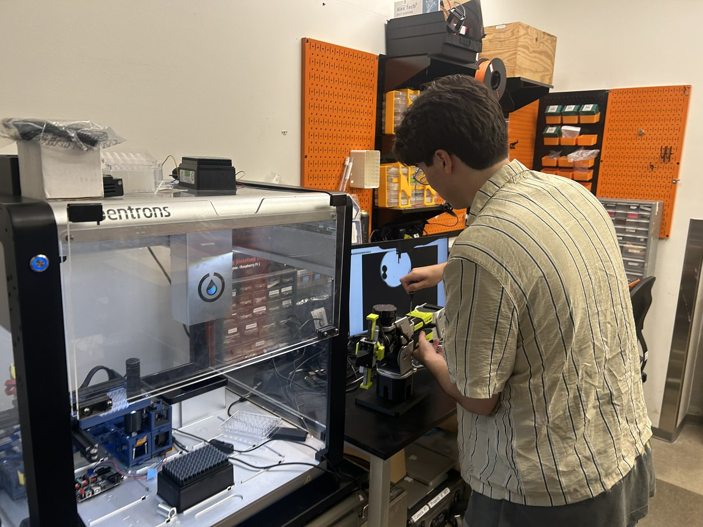

Vision-Guided Organoid Culture Automation Workcell
A microscope, moving stage, pipetting robot, and robot arm that feed and image living human organoids without the pipette ever touching them.
The lab grows cortical organoids, human mini-brains made from stem cells, to study how microglia shape brain development and injury response. Keeping them alive means feeding and imaging every plate by hand, every day.
As the only engineer, I built the well-scanning stage from a repurposed laser engraver. It carries a plate of organoids over a stationary brightfield microscope, all running inside an automated pipetting robot, with a robot arm outside swapping plates with the incubator.
Fifteen constraints, all true at once. Every one of them forced a mechanical choice.
- 01Microscope underneath, so the pipettor can reach the samples
- 02Brightfield backing light behind the sample
- 03Continuous access to sample images for analysis
- 04Microscope and plate stage fit inside the pipetting robot
- 05Three robot floor modules stay open for reagents
- 06Focusing fully automated
- 07Robot arm never blocks the system or the incubator
- 08Sterile throughout
- 09Stoppable at any moment
- 10Pipettor travel limited short of a crash into the optics
- 11Runs autonomously for days
- 12Works with 96-well plates or any lower count
- 13Modular box system, so fluorescence can be added
- 14All-3D-printed housing, for easy reproducibility
- 15Works for any organoid or 3D cell clump



